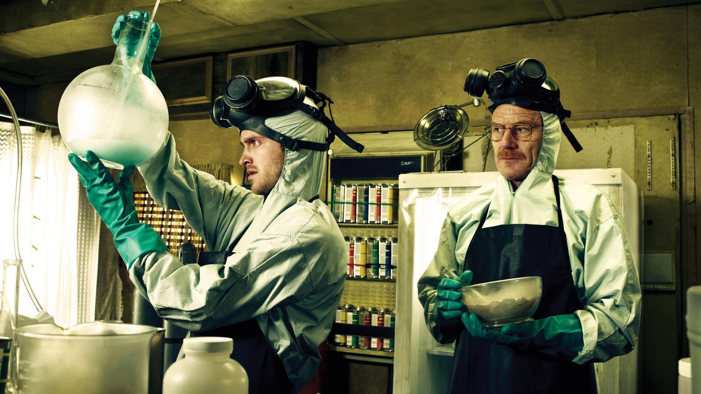

Walter White
The one who knocks!

Walter white & his side kick Jesse Pinkman cooking meth
Here's a time line of walter white's life:
- 1958 - born September 7
- hello
- hello
- hello
- hello
Who are you talking to right now? Who is it you think you see? ...Do you know how much I make a year? I mean, even if I told you, you wouldn't believe it. Do you know what would happen if I suddenly decided to stop going to work? A business big enough that it could be listed on the NASDAQ goes belly up; disappears, it ceases to exist without me. No, you clearly don't know who you're talking to, so let me clue you in. I am not in danger, Skyler. I am the danger. A guy opens his door and gets shot and you think that of me? No. I am the one who knocks!
Walt telling Skyler who he is